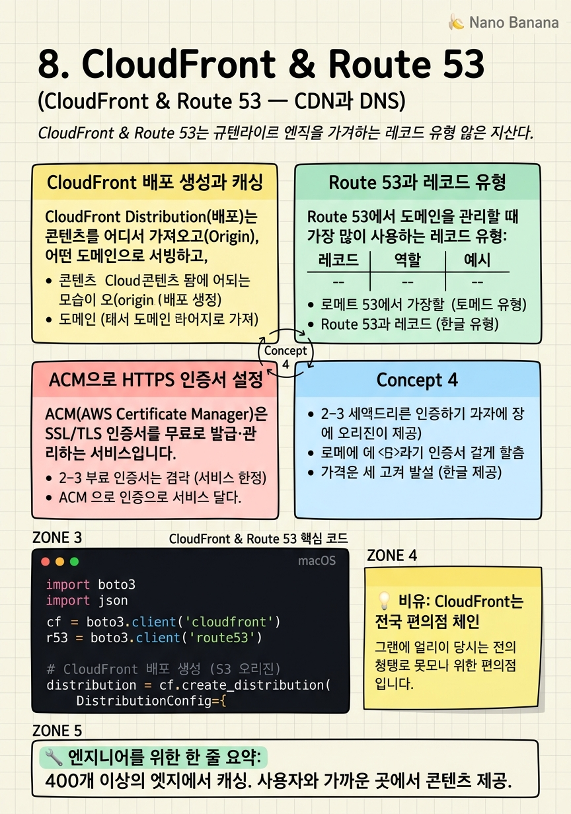

CloudFront & Route 53

🎯 학습 목표
- CloudFront 배포(Distribution)를 생성하고 S3 오리진을 연결할 수 있다
- Route 53에서 도메인 레코드를 생성할 수 있다
- ACM(AWS Certificate Manager)으로 SSL 인증서를 발급할 수 있다
- CloudFront + S3 조합으로 HTTPS 정적 웹사이트를 구성할 수 있다
- Route 53 라우팅 정책(지연 시간·장애 조치·지리적)의 차이를 이해한다
웹사이트를 서울에 있는 S3에 호스팅했는데, 미국 사용자가 접근하면 태평양을 건너야 합니다. 이 거리로 인한 지연(레이턴시)은 사용자 경험을 크게 해칩니다. CloudFront는 이 문제를 해결합니다.
Amazon CloudFront는 전 세계 400개 이상의 엣지 로케이션(Edge Location)에서 콘텐츠를 캐싱하는 CDN(Content Delivery Network)입니다. 사용자가 요청하면 원본 서버(S3, EC2, ALB 등)가 아니라 가장 가까운 엣지 로케이션에서 캐싱된 콘텐츠를 빠르게 제공합니다.
 *이미지 출처: © Amazon Web Services, Inc. — [What is Amazon CloudFront?](https://docs.aws.amazon.com/AmazonCloudFront/latest/DeveloperGuide/Introduction.html) (교육 목적 인용)*
Amazon Route 53은 AWS의 DNS(Domain Name System) 서비스입니다. 도메인 이름(example.com)을 IP 주소나 AWS 리소스로 연결합니다. 이름이 'Route 53'인 이유는 DNS가 포트 53을 사용하기 때문입니다. Route 53은 단순 DNS를 넘어 헬스 체크 기반 자동 장애 조치, 지리적 라우팅, 레이턴시 기반 라우팅 같은 고급 기능도 제공합니다.
핵심 내용
CloudFront 배포 생성과 캐싱
CloudFront Distribution(배포)는 콘텐츠를 어디서 가져오고(Origin), 어떤 도메인으로 서빙하고, 얼마나 캐싱할지를 정의하는 설정 단위입니다.
Origin(오리진) 유형: - S3 Bucket: 정적 파일 (HTML, CSS, JS, 이미지) - Application Load Balancer: 동적 웹 애플리케이션 - EC2 인스턴스: 커스텀 웹 서버 - 외부 HTTP 서버: AWS 외부의 서버도 오리진으로 사용 가능
TTL(Time To Live)은 캐싱 지속 시간입니다. 파일이 엣지 로케이션에 캐싱된 후 TTL이 지나야 원본을 다시 확인합니다. 자주 변경되는 파일은 짧은 TTL, 이미지처럼 잘 변경되지 않는 파일은 긴 TTL(1년)을 설정합니다.
파일을 즉시 무효화(Invalidation)하려면 CloudFront에 무효화 요청을 보냅니다. 경로를 지정할 수 있습니다 (/index.html, /assets/*). 단, 무효화는 경로당 $0.005이며, 1,000개까지는 무료입니다.
S3를 오리진으로 사용할 때 보안 설정: S3 버킷을 Public으로 열지 않고도 CloudFront가 접근할 수 있게 하려면 OAC(Origin Access Control)를 사용합니다. 이렇게 하면 CloudFront를 통해서만 S3에 접근 가능해져 버킷 URL 직접 접근을 차단할 수 있습니다.
Route 53과 레코드 유형
Route 53에서 도메인을 관리할 때 가장 많이 사용하는 레코드 유형:
| 레코드 | 역할 | 예시 |
|---|---|---|
| A | 도메인 → IPv4 주소 | example.com → 1.2.3.4 |
| AAAA | 도메인 → IPv6 주소 | example.com → ::1 |
| CNAME | 도메인 → 다른 도메인 | www.example.com → example.com |
| Alias | AWS 리소스에 직접 매핑 | example.com → CloudFront/ALB 도메인 |
| MX | 이메일 서버 지정 | Gmail·SES 연동 |
| TXT | 문자열 값 (도메인 소유 인증) | ACM 인증서 검증 |
Alias 레코드는 AWS 전용 레코드로, CloudFront 배포·ALB·S3 웹사이트 엔드포인트에 루트 도메인(example.com)을 연결할 때 사용합니다. CNAME은 루트 도메인에서 사용할 수 없지만 Alias는 가능합니다.
Route 53 라우팅 정책:
- Simple: 일반적인 단일 리소스 라우팅 - Weighted: 트래픽을 비율로 분배 (A/B 테스트, 점진적 배포) - Latency: 사용자에게 가장 가까운 리전으로 라우팅 - Failover: 헬스 체크 실패 시 자동으로 백업 리소스로 전환 - Geolocation: 사용자 위치(국가·대륙)에 따라 다른 콘텐츠 제공 - Geoproximity: 편향(Bias) 값으로 트래픽 분배 조정
ACM으로 HTTPS 인증서 설정
ACM(AWS Certificate Manager)은 SSL/TLS 인증서를 무료로 발급·관리하는 서비스입니다. 갱신도 자동으로 이루어집니다. CloudFront에 사용할 인증서는 반드시 us-east-1(버지니아 북부) 리전에서 발급해야 합니다 (CloudFront의 글로벌 특성 때문).
인증서 발급 과정:
1. ACM 콘솔에서 us-east-1 리전으로 이동
2. '인증서 요청' → '공인 인증서'
3. 도메인 이름 입력 (예: example.com, *.example.com)
4. DNS 검증 선택 (Route 53 사용 시 자동 CNAME 레코드 생성)
5. 검증 완료 후 인증서 ARN 복사
6. CloudFront 배포에 인증서 ARN 연결
HTTPS 전용 강제 리다이렉트: CloudFront에서 뷰어 프로토콜 정책을 'Redirect HTTP to HTTPS'로 설정하면 HTTP로 오는 요청을 자동으로 HTTPS로 리다이렉트합니다.
최종 구성: Route 53 도메인 → CloudFront (HTTPS, ACM 인증서) → S3 버킷 (OAC 보호). 이 조합으로 서버 없이 전 세계 어디서든 빠르고 안전한 정적 웹사이트를 운영할 수 있습니다.
💡 비유로 이해하기
CloudFront를 이해하는 가장 좋은 비유는 전국에 편의점 체인을 운영하는 것입니다. 편의점 본사(Origin — S3 또는 서버)가 서울에 있어도, 부산 고객은 부산 편의점(Edge Location)에서 물건을 삽니다. 매번 서울 본사에서 배송을 기다릴 필요가 없습니다.
편의점은 자주 팔리는 상품(캐싱 가능한 콘텐츠 — HTML·이미지·JS)을 항상 재고로 유지합니다. 재고가 소진되거나(TTL 만료) 본사에서 새 상품을 내놓으면(캐시 무효화) 최신 물건을 다시 가져옵니다. 주문 제작 상품(동적 콘텐츠)은 편의점을 거쳐 본사에 직접 주문합니다.
Route 53은 고객이 '편의점 가려면 어디로?'라고 물었을 때 가장 가까운 지점 주소를 알려주는 안내 서비스입니다. 한 지점이 문을 닫으면(장애 조치) 다른 지점 주소를 알려줍니다.
💻 코드 예시
boto3로 CloudFront 배포를 생성하고, Route 53에 Alias 레코드를 추가하는 자동화 예제입니다. 실제 환경에서는 ACM 인증서 ARN이 필요합니다.
import boto3
import json
cf = boto3.client('cloudfront')
r53 = boto3.client('route53')
# CloudFront 배포 생성 (S3 오리진)
distribution = cf.create_distribution(
DistributionConfig={
'CallerReference': 'my-site-2024-001', # 고유 요청 식별자
'Origins': {
'Quantity': 1,
'Items': [{
'Id': 's3-origin',
'DomainName': 'my-bucket.s3.ap-northeast-2.amazonaws.com',
'S3OriginConfig': {'OriginAccessIdentity': ''} # OAC 사용 시
}]
},
'DefaultCacheBehavior': {
'TargetOriginId': 's3-origin',
'ViewerProtocolPolicy': 'redirect-to-https', # HTTP → HTTPS 리다이렉트
'CachePolicyId': '658327ea-f89d-4fab-a63d-7e88639e58f6', # CachingOptimized
'Compress': True
},
'DefaultRootObject': 'index.html',
'Enabled': True,
'Aliases': {'Quantity': 1, 'Items': ['example.com']},
'ViewerCertificate': {
'ACMCertificateArn': 'arn:aws:acm:us-east-1:123456:certificate/xxx',
'SslSupportMethod': 'sni-only',
'MinimumProtocolVersion': 'TLSv1.2_2021'
},
'HttpVersion': 'http2and3'
}
)
dist_domain = distribution['Distribution']['DomainName']
print(f"✅ CloudFront 도메인: {dist_domain}")
# Route 53 Alias 레코드 추가
r53.change_resource_record_sets(
HostedZoneId='ZXXXXXXXXXXXXXX',
ChangeBatch={
'Changes': [{
'Action': 'CREATE',
'ResourceRecordSet': {
'Name': 'example.com',
'Type': 'A',
'AliasTarget': {
'HostedZoneId': 'Z2FDTNDATAQYW2', # CloudFront 고정 Zone ID
'DNSName': dist_domain,
'EvaluateTargetHealth': False
}
}
}]
}
)
print("✅ Route 53 Alias 레코드 생성 완료")CloudFront 배포 생성 시 CallerReference는 멱등성(Idempotency)을 위한 고유 문자열입니다. ViewerProtocolPolicy: redirect-to-https가 HTTP→HTTPS 자동 리다이렉트 설정입니다. CloudFront Alias 레코드의 HostedZoneId는 항상 Z2FDTNDATAQYW2입니다 (모든 CloudFront 배포 공통). 배포 생성 후 글로벌 전파에 5~15분이 소요됩니다.
🏭 현업에서의 평가
✅ 시니어가 보는 것
- 캐시 무효화 비용을 최소화하는 배포 전략을 설계하는가 (파일명 해싱)
- OAC로 S3 버킷을 직접 노출하지 않는 보안 설계를 아는가
- Route 53 헬스 체크와 Failover 라우팅으로 DR(재해 복구)을 구성하는가
⚠️ 레드 플래그
- CloudFront를 우회해 S3 URL로 직접 파일을 서빙하는 것이 더 빠르다고 생각함
- 모든 경로에 대한 무효화(`/*`)를 매번 사용해 불필요한 비용 발생
- ACM 인증서를 ap-northeast-2가 아닌 us-east-1에서 발급해야 함을 모름
🎤 예상 인터뷰 질문
- CloudFront 캐싱 히트율을 높이기 위한 전략을 설명해 주세요.
- Route 53에서 blue/green 배포를 구현하는 방법은 무엇입니까? (Weighted 라우팅)
- CloudFront를 통해 특정 국가의 트래픽을 차단하는 방법은?
✨ 핵심 요약
CloudFront = 글로벌 CDN
400개 이상의 엣지에서 캐싱. 사용자와 가까운 곳에서 콘텐츠 제공.
OAC로 S3 보호
버킷을 Public으로 열지 않고 CloudFront만 S3에 접근하게 한다.
ACM 인증서는 us-east-1에서
CloudFront용 인증서는 반드시 버지니아 북부 리전에서 발급.
Alias > CNAME (루트 도메인)
example.com에는 CNAME이 안 된다. Alias 레코드를 사용한다.
파일명 해싱으로 캐시 무효화 최소화
`app.abc123.js`처럼 빌드 해시를 파일명에 포함해 무효화 없이 배포.
Route 53 헬스 체크 자동화
주 리소스 장애 시 자동으로 백업으로 트래픽 전환.
HTTP/3 지원
CloudFront는 HTTP/3 (QUIC)를 지원해 모바일 환경에서 빠르다.
S3 + CloudFront = 서버리스 웹
EC2 없이 HTTPS 웹사이트 운영 가능. 비용도 저렴.